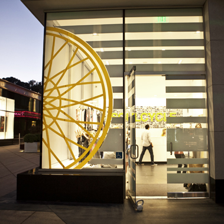
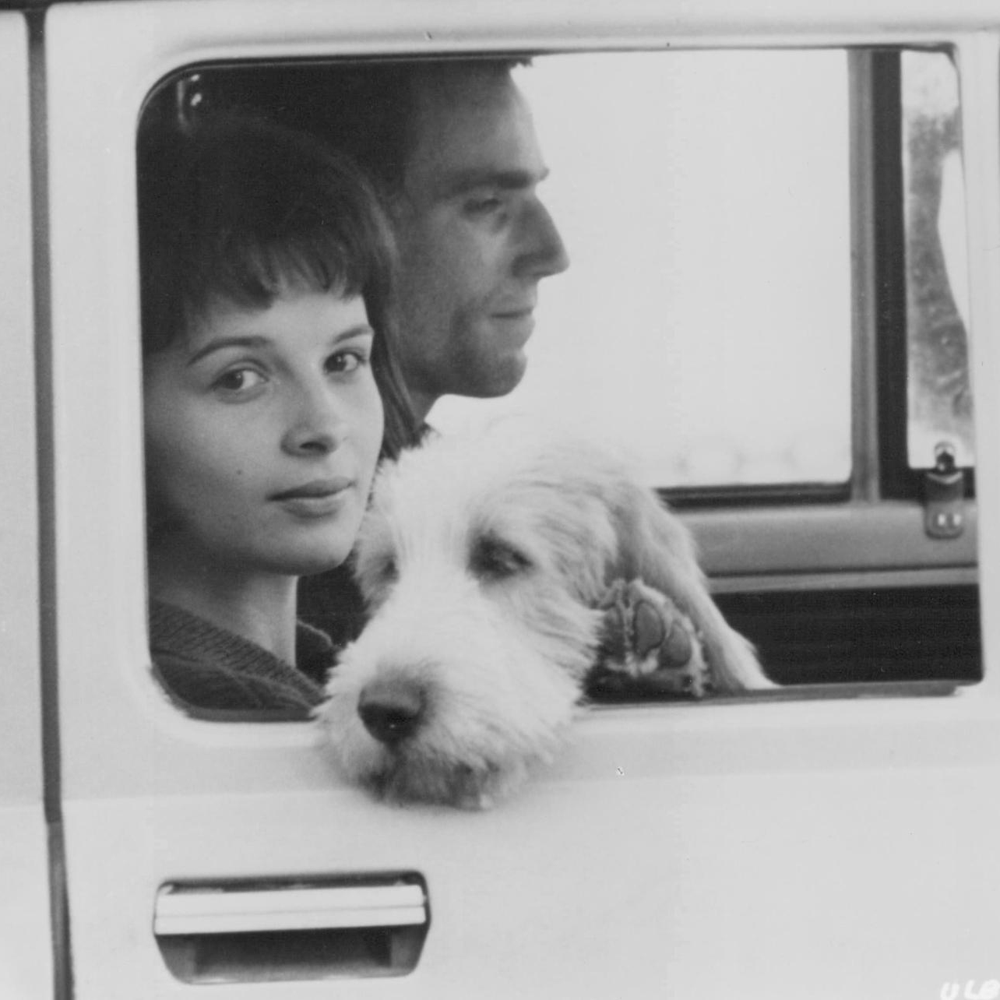
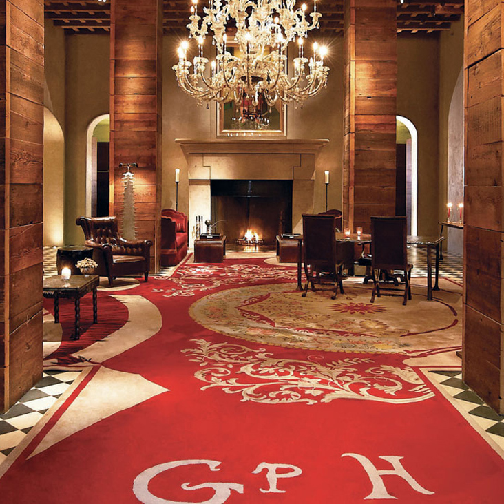
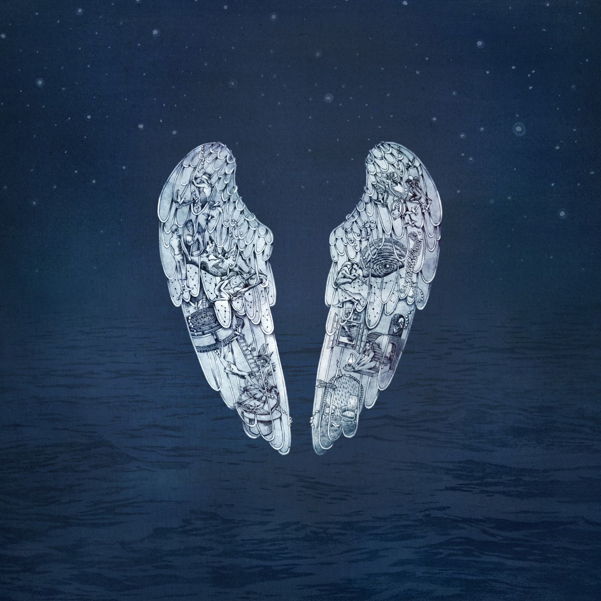
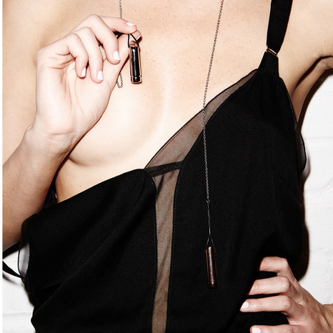

Launching in 2015, PlsPlsMe is a mobile app designed to uncover what turns you on, facilitate sharing those turn-ons with a partner and spark conversations that allow infinite foreplay to unfold inside and outside the bedroom. To develop the app, we partnered with leading sex researchers and Dr. Debby Herbenick from Indiana University (home of the Kinsey Institute) to conduct arguably the most daring and comprehensive sex survey ever, "PlsPlsMe 2015 Sexual Exploration in America."
We're excited to be at Disrupt NY 2015 and to give attendees a sneak peek at the company and app we've been building around the idea of disrupting the way we figure out and talk about what turns us on. Come visit our booth in Startup Alley on May 5th and you can take our sexual profile quiz (based on real science and data, because smart is sexy). Or, if you'd rather take it slow, just give us your email and we'll put you on the waitlist for our Beta and give you a chance to win some of the things that are turning us on these days.
After riding through 45 minutes of SoulCycle, who doesn't feel turned on? The dark, the candles, the music, affirmations, and yes, the sweat. Lots of it. Sweating is hot and gives us lots of yummy endorphins. And we all know how endorphins make us feel. Ready for someone to kiss us hard. We love how SoulCycle does everything possible to remove distractions that can take you out of the high of your ride. They know how to switch us on and keep us there. Which also applies to better sexual experiences. Set the mood right and getting turned on is just easier. Then don't let anything into that mood that might distract and lead to a turn-off. Plus, if you're doing it right, you sweat a lot. Bonus.
Did you know that your biggest sexual organ is your brain? Most of our erotic drivers are mental, not physical. Which is why a good book can turn you on. Take you to the edge of yourself. Force you to explore different sides of your personality. Change you. Just like a good partner can. Intellectually. Emotionally. Sexually. For us, Milan Kundera's magnum opus, THE UNBEARABLE LIGHTNESS OF BEING, makes us want to roam the streets of Prague with a lover. The darkness of the city, the edge and grit and intensity oozes out of every building. His writing, daring and provocative, explores people pushing themselves to the limits of themselves, to the brink, and back again. Now that's a turn-on.
Ask anyone who's ever been to the Gramercy Park Hotel, and they'll talk about the smell. The Le Labo Cade No. 26 Candle they burn there creates an indelible memory in the minds of their guests. Its scent is at once earthy and smoldering. And an immediate turn-on for us. Located just around the corner from our offices, we'll often stop by the Rose Bar at The Gramercy Park Hotel for a cocktail after work, just to revel in the smell for a moment and draw inspiration. While we can't deliver the whole gestalt of that place in our app, we've drawn a lot of inspiration from their impeccably curated experience. Grab one of their candles for yourself and the hotel is immediately transported to your bedroom.
Our phones have become one of our most intimate connection points. We flirt. We tease. We sext (come on you know you do it). It is a modern day foreplay tool, but only if you have enough juice. Infinite foreplay is only possible with infinite power. Which is why we love the Mophie portable charger. Carry one in your bag, and you're always turned on. Literally.
It's no secret that the right playlist can make a mood. So we're always on the lookout for new songs that turn us on. The first time we heard "Midnight" by Coldplay, it took our breath away. It transported us to the stars, and made us want to wrap around our partners for long, deep kisses. The amazing part of music? It can be a great connection point for lovers separated by distance. Both can listen at the same time, be turned on together, transported to the memory of being in the same space, mentally and physically. For us, this song has just the right balance of romance. Sexy and sweet, with a knife's edge to it.
The bullet vibrating necklace, from Curriculum Vitae, is a subtle secret that can be worn all day, in any setting. It's also a sex toy. We love being in a meeting, or riding the subway, or sitting at a bar, everyone around us unaware that we're wearing a vibrator. It's elegant, sophisticated and titillating. A naughty secret worn around our necks for all the world to see. Even better? It makes a great gift. A constant reminder of a lover. Our secret, hidden in plain sight.
